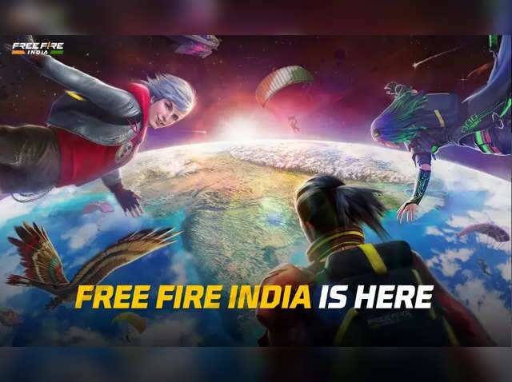

In the vast expanse of gaming, few genres offer the adrenaline rush and heart-pounding excitement quite like the battle royale genre. Among the myriad of options available to gamers, Free Fire stands out as a titan in the realm of mobile battle royale games. Released in 2017 by Garena, Free Fire quickly gained traction, captivating players with its fast-paced action and accessible gameplay. Its success can be attributed to a combination of factors, including its compatibility with a wide range of devices, intuitive controls, and frequent updates that keep the experience fresh.
In the vast expanse of gaming, few genres offer the adrenaline rush and heart-pounding excitement quite like the battle royale genre. Among the myriad of options available to gamers, Free Fire stands out as a titan in the realm of mobile battle royale games. Released in 2017 by Garena, Free Fire quickly gained traction, captivating players with its fast-paced action and accessible gameplay. Its success can be attributed to a combination of factors, including its compatibility with a wide range of devices, intuitive controls, and frequent updates that keep the experience fresh.

One of the most compelling aspects of Free Fire is its diverse arsenal of weapons and equipment. From assault rifles and sniper rifles to grenades and armor, players have access to a wide range of tools to gain the upper hand in combat. Each weapon has its own unique characteristics, requiring players to adapt their strategies accordingly. Whether you're a sharpshooter picking off enemies from a distance or a close-quarters combatant wreaking havoc with a shotgun, the possibilities are endless. .
In addition to its diverse weaponry, Free Fire boasts a variety of dynamic maps that keep gameplay fresh and exciting. From sprawling urban landscapes to dense jungles, each map offers its own set of challenges and opportunities. Players must navigate these environments strategically, utilizing cover and terrain to gain the upper hand. With each match presenting a new set of circumstances, no two games of Free Fire are ever the same. Beyond its captivating gameplay and expansive maps, Free Fire owes much of its success to its vibrant and engaged community. From content creators and streamers to casual players and esports professionals, Free Fire has cultivated a dedicated fanbase that continues to support and elevate the game. Through events, tournaments, and social media engagement, Garena has fostered a sense of camaraderie among players, further solidifying Free Fire's status as a cultural phenomenon.
In the ever-evolving landscape of mobile gaming, Free Fire stands as a shining example of what can be achieved through innovation, dedication, and community engagement. As it continues to evolve and grow, one thing is certain: the fire of Free Fire shows no signs of dimming anytime soon.